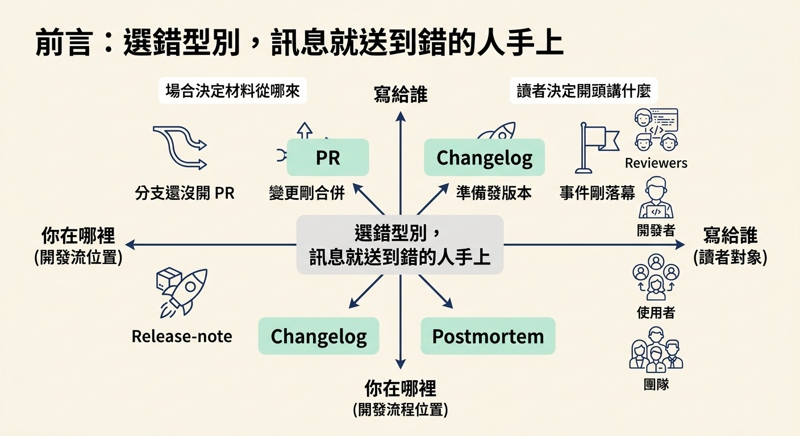
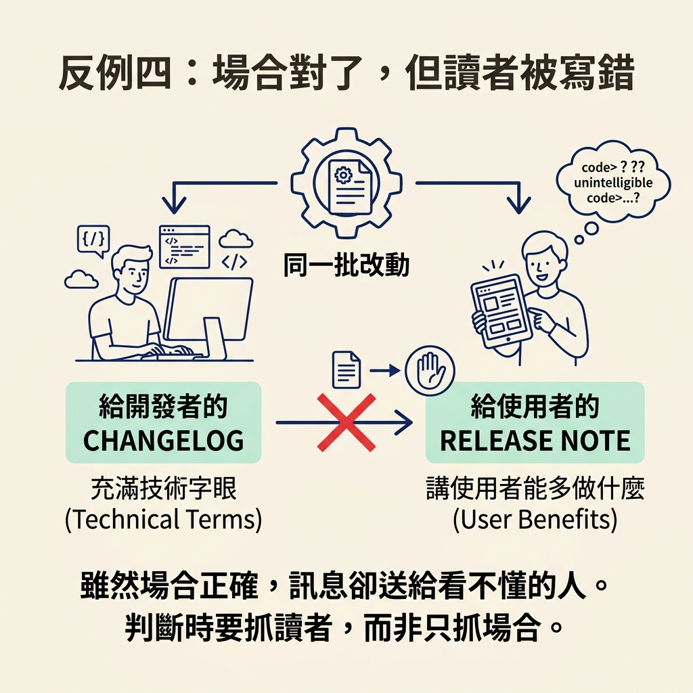

這一節要教你做一個選擇：同一個變更，到底該寫成 PR 描述、changelog 條目、release note，還是 postmortem？你會用「你在哪裡、寫給誰」這兩個座標挑出正確的型別，也會知道每一型開頭該先講什麼，以及在哪些情況下原本的規則會翻轉。
/document 一次支援四種文件，因為同一個變更在不同場合、對不同讀者，需要講的話並不一樣。你要決定的就是：現在該寫哪一種。
這個選擇有兩股力量在拉扯。第一股是你在哪裡：你現在處在開發流程的哪個位置，是分支還沒開 PR、變更剛合併、準備發版本，還是事件剛剛落幕。場合決定了材料從哪裡來。第二股是寫給誰：讀者是 reviewers、開發者、使用者，還是團隊。讀者決定了開頭該先講什麼。場合與讀者交叉之後，答案通常只剩一個。

選錯的代價很具體。你把給使用者的 release note 寫成一行 changelog 式的技術描述，使用者看不到自己能多做什麼；你把內部的事件紀錄寫得含糊，下一次同樣的事故就沒有可用的教訓。所以這一步值得慢下來判斷。
先把四個選項並排看清楚。下面這張表的最後一欄，就是每一型「開頭該講什麼」。
| 型別 | 你在哪裡（材料來源） | 寫給誰（讀者） | 開頭先講什麼 |
|---|---|---|---|
pr | 分支的 commits 加上相對 base 的 diff | reviewers | 用產品語言講這次改了什麼 |
changelog | 一個已合併的變更 | 開發者 | 新增了什麼、修好了什麼 |
release-note | 一個 tag 或版本範圍 | 使用者 | 他們現在能做什麼，breaking change 要標明 |
postmortem | 一次事件（工程師描述，外加任何 /debug 紀錄） | 團隊 | 事實，未知的部分就標成未知 |
這張表不是隨手整理的，它對應 skill 裡的定義。原文把四個型別的來源、讀者與輸出一字排開：
| Type | Source | Audience | Output | |---|---|---|---| | `pr` | branch commits + diff vs base | reviewers | PR title + body (chat; optionally `gh pr` create/edit) | | `changelog` | merged change | developers | entry appended to `CHANGELOG.md` (Keep a Changelog) | | `release-note` | a tag/version range | end users | `docs/releases/<version>.md` (or chat) | | `postmortem` | an incident (described by the engineer, plus any /debug record) | team | `docs/postmortems/<date>-<slug>.md` |
從「輸出」那一欄也能看出場合的線索：pr 的成品是一段可以直接貼上的標題加內文，通常只存在於對話裡；changelog 是寫進檔案；release-note 與 postmortem 則各自寫到對應的文件路徑。
不要憑感覺挑，用可以測試的問句。依序問自己：
pr。changelog。release-note。postmortem。實際上你不一定每次都要自己回答。skill 會先從你所在的位置推斷：例如你在 feature branch 上，它就會建議 PR 描述，然後請你確認。它只在推斷不出來時，才把四個選項列出來問你一次。
上面四個問題在多數情況成立，但有幾個場合會讓規則轉彎。這些正是最容易出錯的地方，所以特別挑出來講。
release note 需要一個版本範圍。如果這個 repo 根本沒有任何 tag，正確做法不是隨便猜一個版本號，而是停下來問你，請你給出一個版本名稱與範圍。
- **`release-note` range**: if tags exist, the range is `<previous-tag>..<latest-tag>` (or a range the engineer named). **If `NO_TAGS`**, don't guess, ask: "No version tags found. Give me a version name and range (e.g. `v1.0.0`, covering `<commit>..HEAD`), or I'll cover all commits since the first one." Pass the resolved range/version to the subagent.
pr 型別會牽涉到一個對外的動作：把 PR 開起來或更新。這裡有三種會改變行為的情況。第一，這個分支上已經有 PR 了：那就更新它的內文，而不是再建一個重複的。第二，這個環境根本沒安裝 gh，或這個 repo 沒有 remote：那 PR 文字就只能留在對話裡，不要嘗試去碰 gh。第三，也是最關鍵的一條：只要真的要動到 gh，或要推送，一定先停下來問你。
- **pr + gh**: only offer to create/update the PR via `gh` when **`GH_INSTALLED` and `HAS_REMOTE`**. If `PR_EXISTS`, the action is `gh pr edit` (update the body), **not** `gh pr create`. If gh isn't usable or no remote, the PR text is chat only, don't attempt `gh`. **Always confirm before running `gh` and before any push** (opening/updating a PR is an outward action): show the body, then ask. This holds regardless of the `AGENTS.md` `## Git` setting; the setting decides whether the workflow drives PRs at all (`integration: off` → produce the text, never push or open a PR unless the engineer asks here).
前三型都能從 git 撈到材料，postmortem 不行。事件發生的經過、時間、影響，不會出現在 commit 或 diff 裡。所以選擇 postmortem 時，skill 會先向你索取基本事實：什麼壞了、什麼時間（含時區）、使用者受到什麼影響、怎麼被發現、根本原因與修法是什麼。它不會自己補上任何時間線或原因——沒給的，就標成未知。
最隱微的一種翻轉，發生在「場合對了、讀者卻寫錯」。changelog 與 release note 常常來自同一批改動，但讀者完全不同：一個是開發者，一個是使用者。把 changelog 的技術訊息直接搬去當 release note 發，場合雖然沒錯，訊息卻送到了不對的人身上。判斷時要抓的是讀者，不是只抓場合。

挑型別只有兩個座標：先問「誰要讀」，再問「我在哪裡」。分支在 base 前選
pr、剛合併選changelog、發版本選release-note、事件後選postmortem；場合決定材料從哪來，讀者決定開頭講什麼。四種型別各有會讓規則翻轉的場合：沒有 tag 就不要猜版本，要問；PR 已存在就更新而非重建；gh 不可用或沒有 remote 就把文字留在對話裡；真正要動
gh或推送之前一定先問你；postmortem 的素材不在 git，必須向工程師索取，不能編造。最後記得，場合對不代表讀者對，changelog 與 release note 是寫給不同的人。
型別選定之後，最後一步就是實際把它寫出來。下一節要走一次 /document 的完整流程：它讀什麼、PR body 的結構長什麼樣、成品放在哪裡，以及它「只寫散文、不 commit、不 push、不 merge」的邊界。